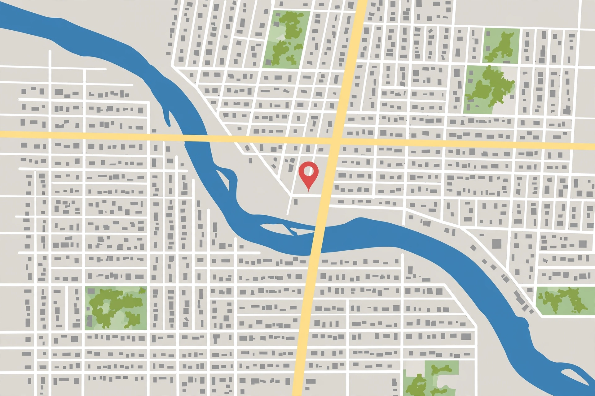

RestaurantsCoffeeGasHotelsThings to do
Traffic, transit, bicycling, terrain and satellite layers are available from the Layers control. Directions give routes by car, public transit, walking and cycling, with live traffic where available.
Related: Maps home (maps.google.com) · Google Search
